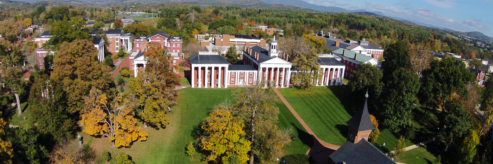

Currently I am a freshman at Washington and Lee University interested in majoring in neuroscience and going to medical school. I am also on the swim team, invovled in Outing Club, and participate in LEAD. I hope to continue to use internet technologies such as programming as I know it will be helpful in the career I am pursuing.